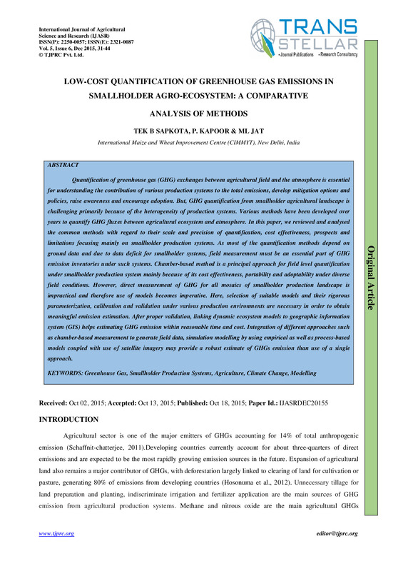
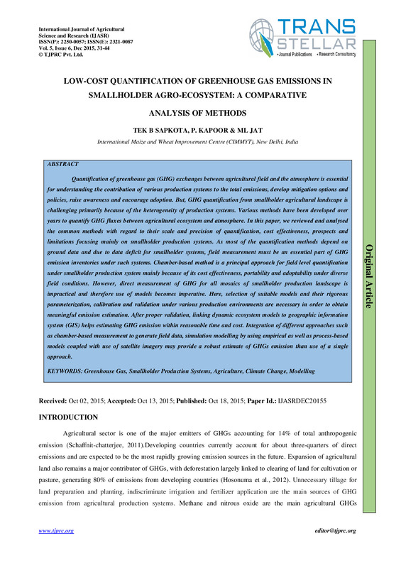
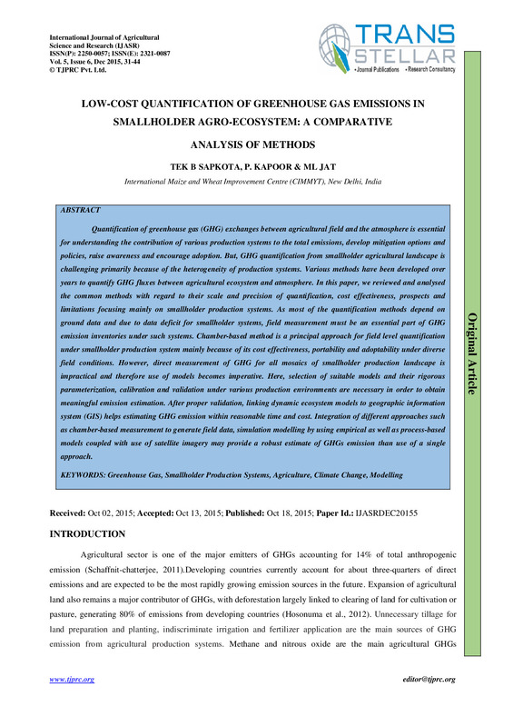

DSpace has supported using ImageMagick to generate thumbnails for PDFs since version 5.0. It is possible to increase the thumbnail resolution¹, but these thumbnails are generally still a bit blurry due to a side effect of the resize operation.
In my experience the thumbnail quality can be improved by using a "supersampling" technique and by preferring the PDF CropBox over the MediaBox where possible.
I propose adding the -density 144 and -define pdf:use-cropbox=true parameters to the DSpace ImageMagick PDF thumbnail operation in DSpace 6.x and 7.x. Read below for more background and examples.
― Alan Orth (@alanorth)
ImageMagick's default resolution is 72 DPI. If we read the input file at a higher density and then generate a thumbnail from that, the resulting image more accurately resembles what the user would see if they opened the PDF on a screen. This is especially noticeable if the PDF contains text, gradients, or curved lines.
Based on my experience with the handful of PDFs here, the performance impact of supersampling with a "2x" density of 144 is:
time).Read more about the "supersampling" technique in ImageMagick.
ImageMagick uses the PDF MediaBox to generate the thumbnail by default, but this can produce unexpected side effects in certain PDFs because the MediaBox is generally used for print. In most cases it is better to use the CropBox because this defines the area the user sees when opening the PDF on a screen.
Read more about the CropBox and PDF page boxes in general.
The thumbnails below are 800 pixels on their longest side — usually height — and are rendered at 400 pixels in CSS for crispness and ease of comparison here. Use the slider overlay on each image to see the before and after application of the proposed parameters in ImageMagick.
-define pdf:use-cropbox=true!

The thumbnails in this gallery were generated by the src/create-thumbnails.sh script using PDF bitstreams from the CGSpace repository. CGSpace was running DSpace 6.3 at the time of writing.
CropBox change for DSpace 7.x. ⌛Future work may include: